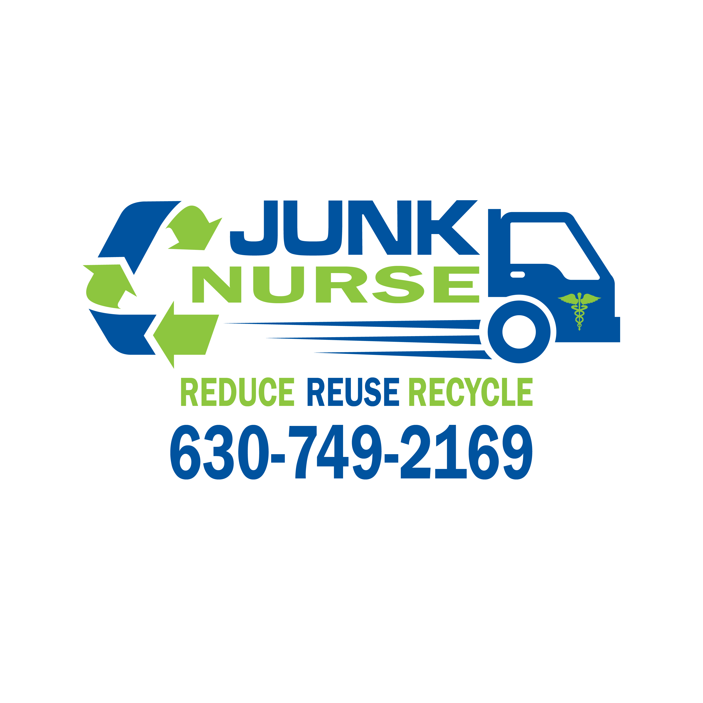
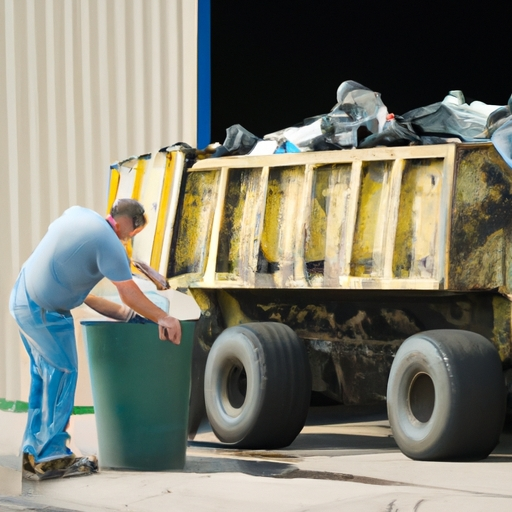

News
Junk Removal Service Aurora, Illinois
Junk Removal Service Aurora, Illinois
About Us
News
What is the Easiest Way to Get Rid of Your Junk?
Getting rid of junk can be a real hassle! (But) with the right approach, it doesn't have to be an overwhelming task.. The easiest way to do this is to hire a professional junk removal service.
Posted by
on 2023-06-30

What should you hire a junk removal service?
Hiring a junk removal service can be a great way to get rid of clutter and free up some space! (It's also much less stressful than trying to do it yourself).. Negatively speaking, this type of service isn't cheap - but it's worth every penny in the long run.
When looking for a company to hire, firstly make sure they have experience and good reviews from people who've used their services before.
Posted by
on 2023-06-30
Is it cheaper to rent a dumpster instead?
Renting a dumpster can be much cheaper than you think!. Instead of buying or renting a truck to haul away your junk and debris, why not just rent a dumpster?
Posted by
on 2023-06-30
What is the Quickest Way to Dispose of Unwanted Items?
Disposing of unwanted items can be a challenge.. There's (so) much stuff that we all accumulate over time, and sometimes it just needs to go!
Posted by
on 2023-06-30
Benefits of Hiring a Professional Junk Removal Service
Hiring a professional junk removal service can be incredibly beneficial (for many people)!. It saves you time, money, and much hassle while ensuring your items are disposed of responsibly.
Posted by
on 2023-06-30
Tips for Choosing the Right Junk Removal Company
Choosing the right junk removal company can be a daunting task!. It's important to find a reliable and responsible provider that will ensure your space is cleared without any hassles.
Posted by
on 2023-06-30
Environmental Impact of Junk Removal Services
Junk removal services can have a major environmental impact. (They) can help keep landfills from overflowing and reduce the amount of waste that ends up in our environment.. On the other hand, however, there are certain aspects of junk removal that may not be so beneficial to the environment.
First off, some junk removals require large trucks or vans which use fuel and emit carbon dioxide into the atmosphere.
Posted by
on 2023-06-30
Reduce, Reuse, Recycle Junk Removal Service
Reduce, Reuse, Recycle Junk Removal Service is an amazing way to help our environment!. It not only helps us get rid of unwanted items but it also encourages us to be mindful of our waste.
Posted by
on 2023-06-30
Old Posts
New Posts